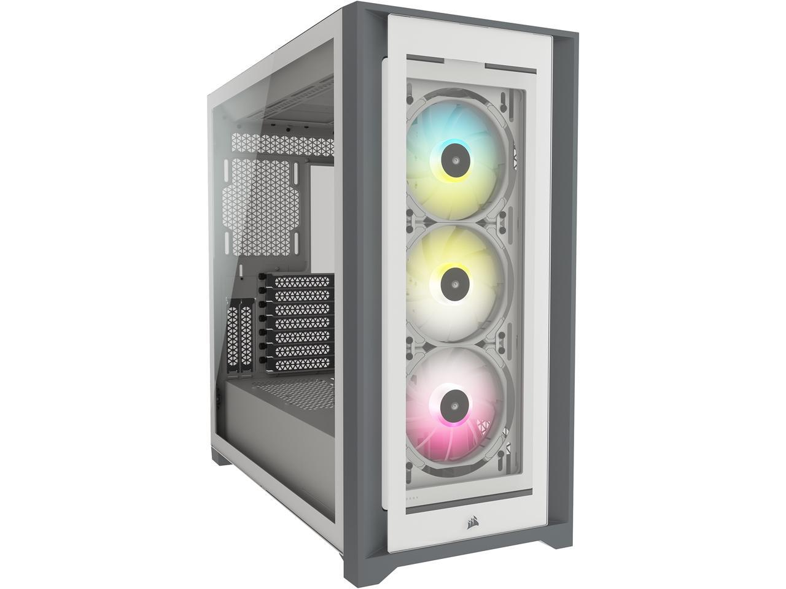
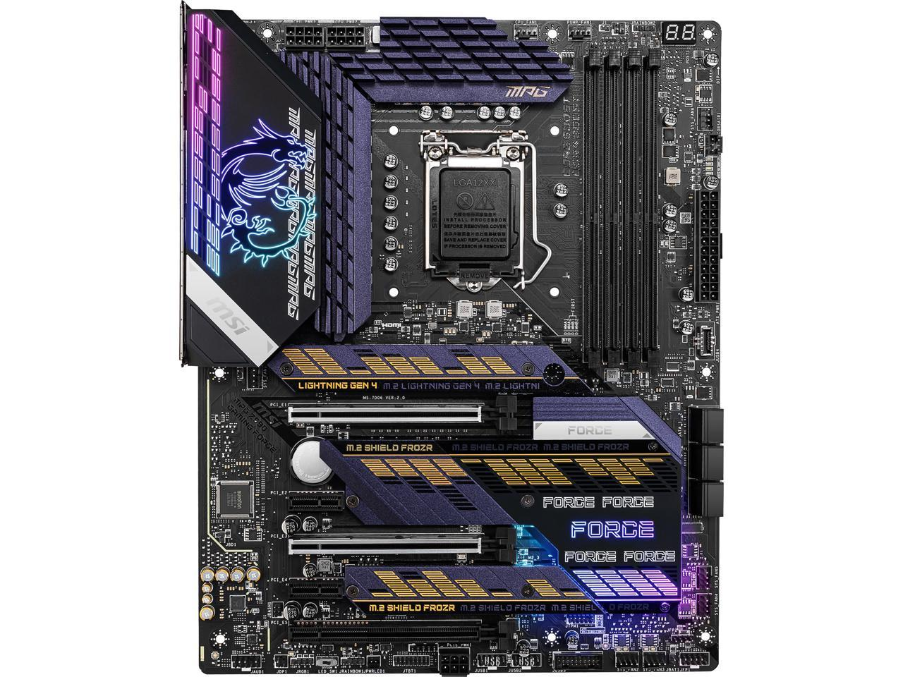
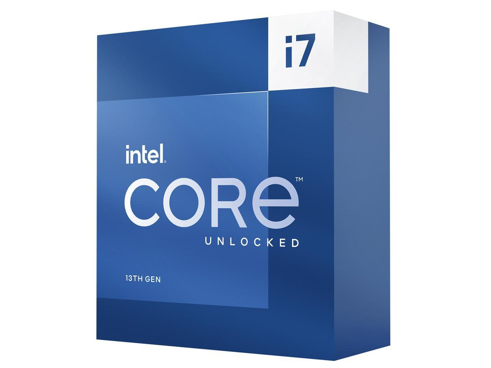
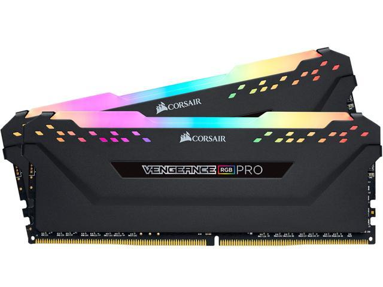
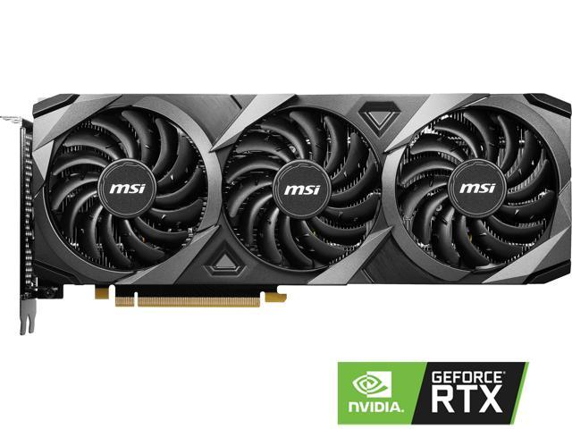
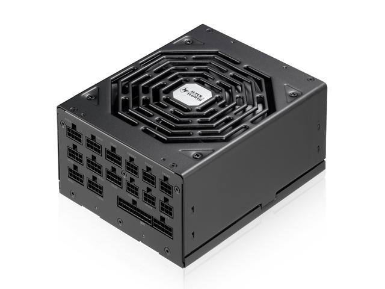
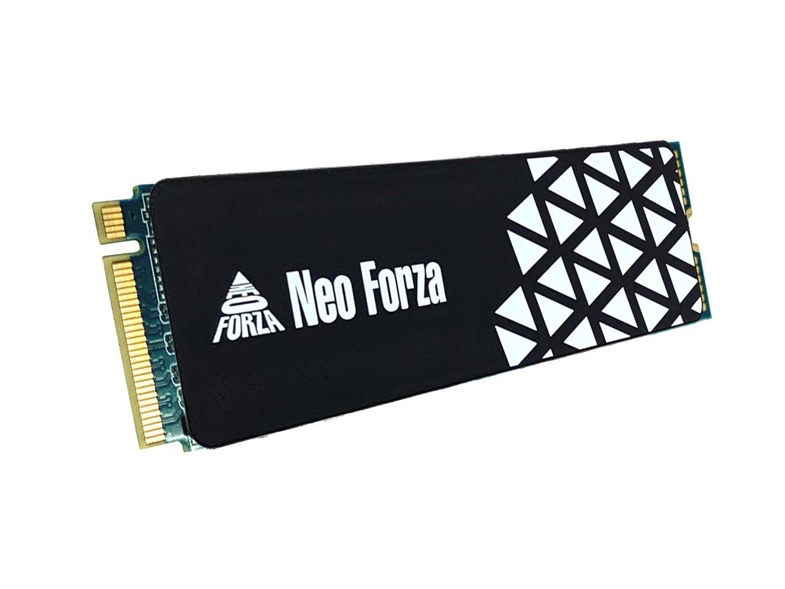
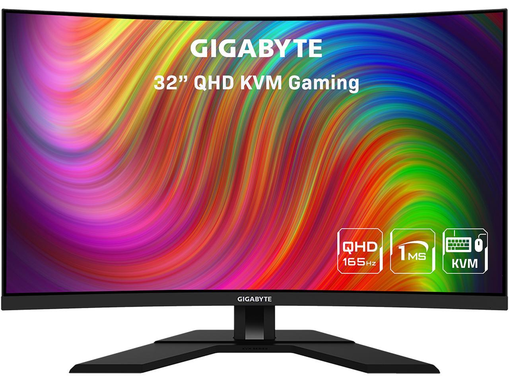
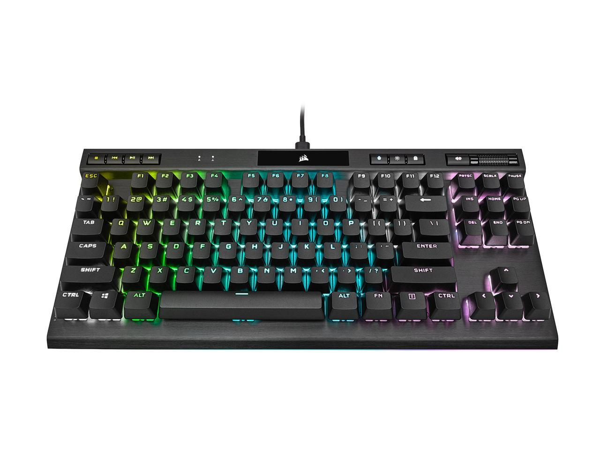
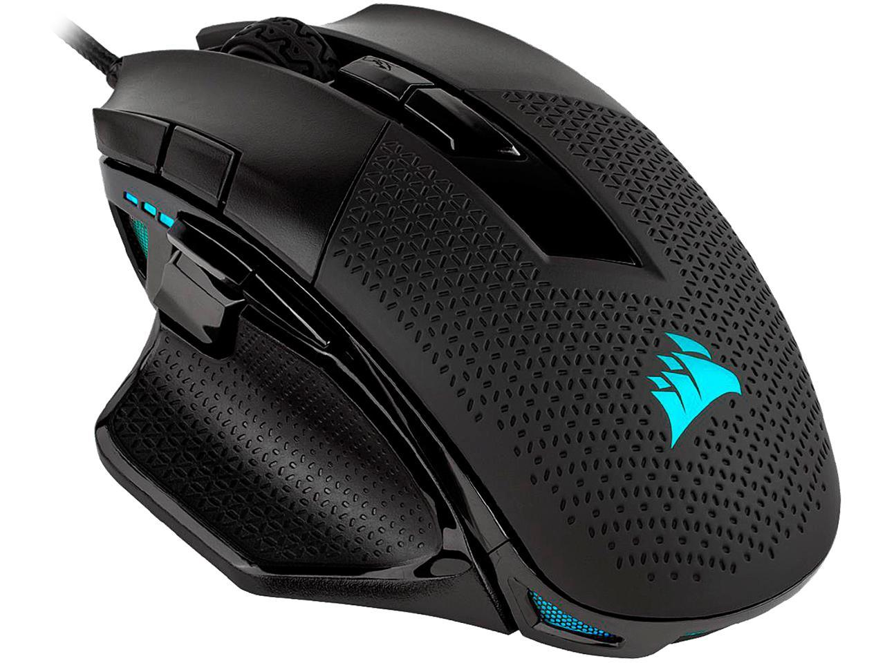

Any case that is large enough to fit all of the internal parts will do. It doesn't necessarily need to be fancy, but fancy is always nice.
https://c1.neweggimages.com/ProductImageCompressAll1280/11-139-165-V21

A solid motherboard is always a good idea. This is not a part to cheap out on. Build quality of the motherbord is of the utmost important. The motherboard must have the correct socket type for the processor
being used. It most also have enough SATA and NVME ports to support all of the connections needed for the system to work. WiFi chips are cool, but not necessary. A connection hub for Ethernet, audio jacks and USB ports is a necessity.
In this picture, the connection hub is located in the top left corner of the motherboard;the part with the cool-looking rainbow dragon.
https://c1.neweggimages.com/ProductImageCompressAll1280/13-144-386-05.jpg

The processor is like the brain of the computer; it is what makes everything else work the way that it is supposed to. A strong processor will go a long way in ensuring that a system can handle whatever is thrown at it.
processors come in different shapes and sizes. Generally, though, a processor with 8 cores and 16 threads with a relatively high base clock-speed (2.4ghz or higher) is desired for gaming. The processor is very important, but when it comes
to video games, the Graphics Card will be doing all of the heavy lifting.
https://c1.neweggimages.com/ProductImageCompressAll1280/19-118-414-V01.jpg

RAM stands for Random Access Memory. It is basically like short-term memory for the computer. It is where the computer stores applications that are in current use so they can be quickly reached by the processor.
All of the data in RAM is lost after the computer is turned off.
https://c1.neweggimages.com/ProductImageCompressAll1280/20-236-606-02.jpg

If the proceesor is the brain of the computer, the Graphics Processing Unit is all of the muscle of the computer system. Processors will often-times have integrated graphical processing units, which are okay for
day-to-day web browsing. However, to play videos in high resolution and especially to play video games at any resolution; a graphics card is required. This is one of the most critical components of a gaming computer. To feed
higher resolution monitors and to play modern games at high frame rates, beefier graphics cards are required.
https://c1.neweggimages.com/ProductImageCompressAll1280/14-137-631-V05.jpg

The Power Supply Unit is what provides the needed electricity to the computer system. To provide power to bigger and more powerful parts, a better PSU is necessary. For a build with a potent GPU, a PSU that is rated
for 600-1000 watts is ideal.
https://c1.neweggimages.com/ProductImageCompressAll1280/AMNPS210318N2STA.jpg

This is a Solid State Drive. Solid State Drives work differently than Hard Disc Drives, but they serve the same purpose. They are the hardware necessary to store data on your computer. Unlike RAM, SSDs and Hard Disc Drives
continue to store data until the data is either deleted or corrupted. SSDs are faster than Hard Disc Drives, but tend to have limited space and are more expensive.
https://c1.neweggimages.com/ProductImageCompressAll1280/AC0ES2207120IOBYG6A.jpg

The monitor is the visual display that the user will interface with when using a computer. A larger monitor with a higher resolution will provide a better image, but anything above 1080p is considered High Definition.
Resolution is defined by the amount of pixels that a display can show horizontally as well as vertically. So, a resolution of 1920x1080 means that the display will show 1,920 pixels horizontally and 1,080 pixels vertically.
https://c1.neweggimages.com/ProductImageCompressAll1280/24-012-047-V08.jpg

The keyboard is one of the tools that allows a user to interface with the computer. By clicking buttons on the keyboard, the user is able to type letters. There are two different types of keyboards: Mechanical and
membrane. Membrane keyboards are most typical. They consist of a single membrane that does not have seperated keys, but rather pressure pads underneath each character key. A mechanical keyboard involves keys that are seperate from each
other. Each key has a mechanical switch underneath it that produces the character upon activation.
https://c1.neweggimages.com/ProductImageCompressAll1280/23-816-146-V02.jpg

The mouse is the second main tool that a user will utilize to interface with the computer. For gaming, a better mouse is preferred. Many video games require high mouse precision, and a mouse with a higher sensitivity
as well as more than the typical amount of buttons will give the user an advantage. The mouse in this picture has several additional buttons that can be mapped to different functions within applications.
https://c1.neweggimages.com/ProductImageCompressAll1280/26-816-133-V36.jpg

Having the right cables and connectors is crucial, so be sure that all of the cables that came with the parts are present and accounted for. If anything is missing or not compatible, purchasing the right connectors
will be necessary.
https://youtu.be/BL4DCEp7blY